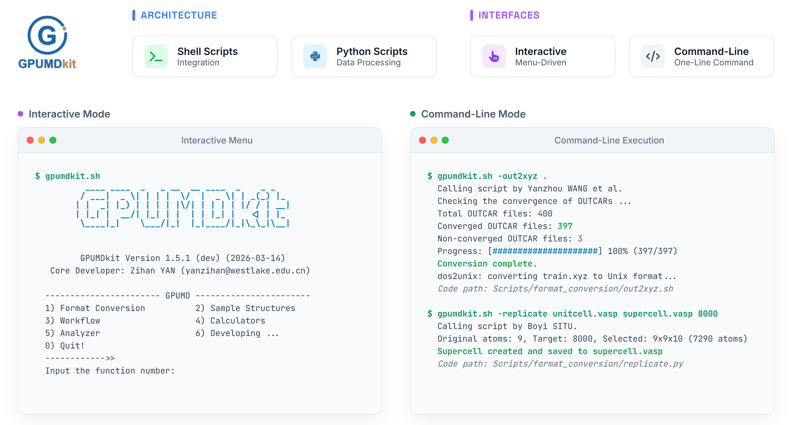

Machine-learned interatomic potentials have revolutionized molecular dynamics simulations by providing quantum-mechanical accuracy at empirical-potential speeds. The graphics processing unit molecular dynamics (GPUMD) package, featuring the highly efficient neuroevolution potential (NEP) framework, has emerged as a powerful tool in this domain. However, the complexity of force field development, active learning, and trajectory post-processing often requires extensive manual scripting, imposing a steep learning curve on new users. To address this, we present GPUMDkit, a comprehensive and user-friendly toolkit that streamlines the entire simulation workflow for GPUMD and NEP. GPUMDkit integrates a suite of essential functionalities, including format conversion, structure sampling, property calculation, and data visualization, accessible through both interactive and command-line interfaces. Its modular, extensible architecture ensures accessibility for users of all experience levels while allowing seamless integration of new features. By automating complex tasks and enhancing productivity, GPUMDkit substantially lowers the barrier to using GPUMD and NEP programs. This article describes the program architecture and demonstrates its capabilities through practical applications.
Architecture & Interfaces
GPUMDkit provides two distinct interface options to deliver an "out-of-the-box" experience:
- Interactive Mode: Delivers intuitive, menu-driven, step-by-step prompts, making it ideal for newcomers exploring complex workflows.
- Command-Line Interface: Caters to experienced users who require efficient execution, batch processing, and seamless integration into automated pipelines through simple one-line commands.
Core Functionalities
The hierarchical design of GPUMDkit organizes an extensive suite of capabilities into clear, accessible modules:
- Format Conversion: Supports seamless conversion between common structure and trajectory formats, including VASP, CP2K, ABACUS, and LAMMPS.
- Structure Sampling: Offers random sampling, uniform sampling, and descriptor-based farthest point sampling (FPS) for optimal coverage of configuration space.
- Workflow Automation: Manages fully automated and semi-automated active learning cycles, providing fine-grained control to inspect sampled structures or adjust training settings between iterations.
- Property Calculations: Extracts critical data directly from GPUMD outputs, supporting radial distribution functions, self-diffusion coefficients, ionic conductivity, density of atomistic states (DOAS), and nudged elastic band (NEB) analysis.
- Visualization and Analysis: Integrates a rich set of plotting tools. Users can effortlessly visualize training loss with
plt_train.py, track the evolution of thermodynamic information usingplt_thermo.py, and analyze transport mechanisms through mean square displacement (MSD) withplt_msd.py.
Proven Capability in Diverse Systems
GPUMDkit's capabilities have been rigorously demonstrated through several complex case studies, connecting macroscopic observations with atomic-scale mechanisms:
- Unraveling the order-disorder phase transition and anisotropic ionic transport in the LLZO solid electrolyte.
- Analyzing structural phase transitions and topological polar structures (e.g., polar vortex arrays) in ferroelectric (Pb,Sr)TiO3 superlattices.
- Processing homogeneous non-equilibrium molecular dynamics (HNEMD) to evaluate phonon-mediated thermal transport in monolayer graphene.
Software Access & Documentation
GPUMDkit is freely available to the community. By enhancing productivity and automating complex tasks, it allows researchers to focus on scientific questions rather than technical implementation.
GitHub Repository: https://github.com/zhyan0603/GPUMDkit
Documentation: https://zhyan0603.github.io/GPUMDkit/htmls/tutorials.html
Preprint: arXiv:2603.17367